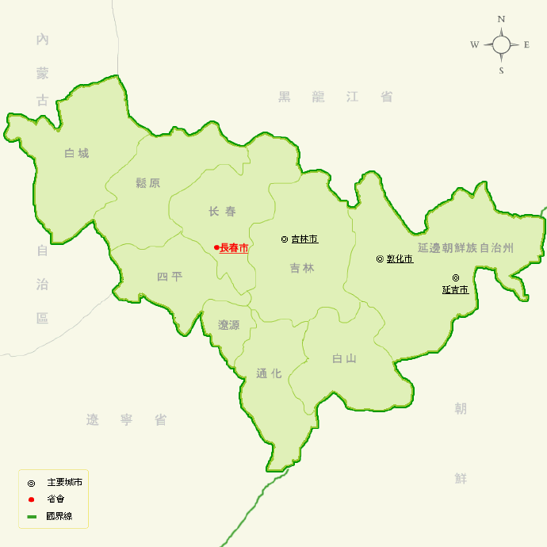
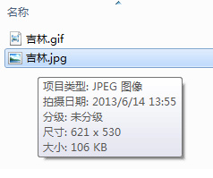
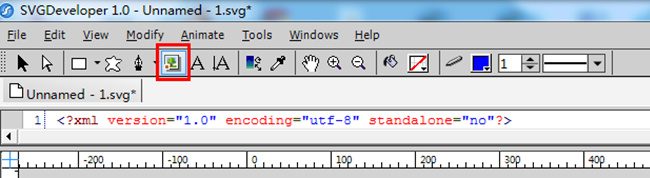
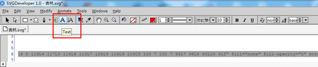
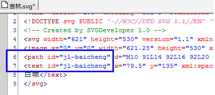
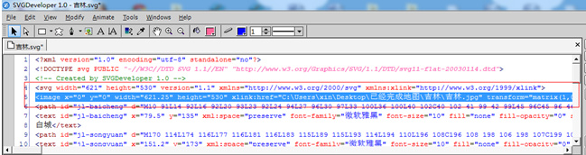

# SVGDeveloper 制作矢量地图教程详解
下面准备好环境之后就开始作图了。
一，首先我们需要找一张地图作为模板，找的模板地图尽量轮廓清晰。
下面我们就拿 吉林地图来作为模板。

二 为了适应 浏览器预览时的大小，我们需要把图片修改下尺寸
![[转载]SVGDeveloper制作矢量地图教程详解。](https://img-blog.csdnimg.cn/20191105133158818.jpg?x-oss-process=image/watermark,type_ZmFuZ3poZW5naGVpdGk,shadow_10,text_aHR0cHM6Ly9ibG9nLmNzZG4ubmV0L3FxXzMyOTYzODQx,size_16,color_FFFFFF,t_70)
一般把高度跳至 530px，宽度不用做什么调整。还有一点就是，尽量吧轮廓修清晰点。
![[转载]SVGDeveloper制作矢量地图教程详解。](https://img-blog.csdnimg.cn/20191105133213640.jpg?x-oss-process=image/watermark,type_ZmFuZ3poZW5naGVpdGk,shadow_10,text_aHR0cHM6Ly9ibG9nLmNzZG4ubmV0L3FxXzMyOTYzODQx,size_16,color_FFFFFF,t_70)
图片上的文字没啥影响，为了做个清晰的模板，我把文字都去掉。
![[转载]SVGDeveloper制作矢量地图教程详解。](https://img-blog.csdnimg.cn/20191105133233258.jpg?x-oss-process=image/watermark,type_ZmFuZ3poZW5naGVpdGk,shadow_10,text_aHR0cHM6Ly9ibG9nLmNzZG4ubmV0L3FxXzMyOTYzODQx,size_16,color_FFFFFF,t_70)
三
1 接下来就是 使用 svg 软件制作适量图了，首先打开 svg，新建 svg 文件。
![[转载]SVGDeveloper制作矢量地图教程详解。](https://img-blog.csdnimg.cn/20191105133251982.jpg?x-oss-process=image/watermark,type_ZmFuZ3poZW5naGVpdGk,shadow_10,text_aHR0cHM6Ly9ibG9nLmNzZG4ubmV0L3FxXzMyOTYzODQx,size_16,color_FFFFFF,t_70)
2 修改 svg 画布大小，调至和要使用的图片模板一样大小。

吧宽高改成 621 *530
![[转载]SVGDeveloper制作矢量地图教程详解。](https://img-blog.csdnimg.cn/20191105133322940.jpg?x-oss-process=image/watermark,type_ZmFuZ3poZW5naGVpdGk,shadow_10,text_aHR0cHM6Ly9ibG9nLmNzZG4ubmV0L3FxXzMyOTYzODQx,size_16,color_FFFFFF,t_70)
3 插入图片模板
点击按钮，插入图片，然后在画布上选中区域，会提示插入图片。

4 点完按钮后，鼠标移至画板，会成一个十字，然后点画布左上角，拉到右下角，尽量把画布占慢重合。松开鼠标后会弹出选择背景图片。
![[转载]SVGDeveloper制作矢量地图教程详解。](https://img-blog.csdnimg.cn/20191105133352177.jpg?x-oss-process=image/watermark,type_ZmFuZ3poZW5naGVpdGk,shadow_10,text_aHR0cHM6Ly9ibG9nLmNzZG4ubmV0L3FxXzMyOTYzODQx,size_16,color_FFFFFF,t_70)
5 打开后 图片和画布不重叠，可以使用键盘上的方向键移动图片。
![[转载]SVGDeveloper制作矢量地图教程详解。](https://img-blog.csdnimg.cn/20191105133407108.jpg?x-oss-process=image/watermark,type_ZmFuZ3poZW5naGVpdGk,shadow_10,text_aHR0cHM6Ly9ibG9nLmNzZG4ubmV0L3FxXzMyOTYzODQx,size_16,color_FFFFFF,t_70)
6 调整好后点一下 黑色箭头。不要再乱动了。
![[转载]SVGDeveloper制作矢量地图教程详解。](https://img-blog.csdnimg.cn/20191105133422142.jpg?x-oss-process=image/watermark,type_ZmFuZ3poZW5naGVpdGk,shadow_10,text_aHR0cHM6Ly9ibG9nLmNzZG4ubmV0L3FxXzMyOTYzODQx,size_16,color_FFFFFF,t_70)
7 现在背景图片调整好以后就是开始扣取区域路径了，也就是最主要的了。
为了轮廓更清晰，准确。我们放大到 500%
![[转载]SVGDeveloper制作矢量地图教程详解。](https://img-blog.csdnimg.cn/20191105133437698.jpg?x-oss-process=image/watermark,type_ZmFuZ3poZW5naGVpdGk,shadow_10,text_aHR0cHM6Ly9ibG9nLmNzZG4ubmV0L3FxXzMyOTYzODQx,size_16,color_FFFFFF,t_70)
8 下面就是开始抠图了。
1 选中钢笔，这个是点路径用的，把填充颜色跳至无，边框蓝色（一般蓝色，为了教程清晰我设置为红色，还有如果不去掉填充颜色的话，抠图的时候会被填充色覆盖区域，影响抠图！！）
![[转载]SVGDeveloper制作矢量地图教程详解。](https://img-blog.csdnimg.cn/20191105133451483.jpg?x-oss-process=image/watermark,type_ZmFuZ3poZW5naGVpdGk,shadow_10,text_aHR0cHM6Ly9ibG9nLmNzZG4ubmV0L3FxXzMyOTYzODQx,size_16,color_FFFFFF,t_70)
2，使用钢笔，在图片上选取路径，逐个点。如果点错的话就 ctrl+z 撤销几步。点取过程中可以使用鼠标滚轮，和下面的滚动条调整显示区域。
![[转载]SVGDeveloper制作矢量地图教程详解。](https://img-blog.csdnimg.cn/20191105133506584.jpg?x-oss-process=image/watermark,type_ZmFuZ3poZW5naGVpdGk,shadow_10,text_aHR0cHM6Ly9ibG9nLmNzZG4ubmV0L3FxXzMyOTYzODQx,size_16,color_FFFFFF,t_70)
3 如果点取的时候不小心，路径不连续了，如图。那么撤销几步
![[转载]SVGDeveloper制作矢量地图教程详解。](https://img-blog.csdnimg.cn/20191105133527985.jpg?x-oss-process=image/watermark,type_ZmFuZ3poZW5naGVpdGk,shadow_10,text_aHR0cHM6Ly9ibG9nLmNzZG4ubmV0L3FxXzMyOTYzODQx,size_16,color_FFFFFF,t_70)
4 然后钢笔 显示一个箭头的时候点一下那个点，就链接起来了，然后继续。
![[转载]SVGDeveloper制作矢量地图教程详解。](https://img-blog.csdnimg.cn/20191105133543121.jpg?x-oss-process=image/watermark,type_ZmFuZ3poZW5naGVpdGk,shadow_10,text_aHR0cHM6Ly9ibG9nLmNzZG4ubmV0L3FxXzMyOTYzODQx,size_16,color_FFFFFF,t_70)
5 然后在结束的时候，钢笔显示圈，再点，这样就完成了一个封闭路径。在 path 属性路径 最后会有一个 Z,这样表示结束了。
![[转载]SVGDeveloper制作矢量地图教程详解。](https://img-blog.csdnimg.cn/20191105133559457.jpg?x-oss-process=image/watermark,type_ZmFuZ3poZW5naGVpdGk,shadow_10,text_aHR0cHM6Ly9ibG9nLmNzZG4ubmV0L3FxXzMyOTYzODQx,size_16,color_FFFFFF,t_70)
6 给区域加文字。 选中 text 工具。然后在对应的位置上点击后输入文字。

7
下面圈住的的是文本框的 IP 可以修改 x，y 值移动文字位置，如果觉得不合适的话。
![[转载]SVGDeveloper制作矢量地图教程详解。](https://img-blog.csdnimg.cn/20191105133646385.jpg?x-oss-process=image/watermark,type_ZmFuZ3poZW5naGVpdGk,shadow_10,text_aHR0cHM6Ly9ibG9nLmNzZG4ubmV0L3FxXzMyOTYzODQx,size_16,color_FFFFFF,t_70)
8，给路径和文本框添加 id 属性，一边以后报表数据接口对应。

9，之后就是依法炮制，逐个扣取各个区域，然后添加文字及 id 属性。
10 所有区域都完成后，把比例缩小。
可以先吧调用北京图片的这句去掉，然后给各个区域配色。
用箭头选中不同区域进行配色什么的也可以改变区域边框颜色。

![[转载]SVGDeveloper制作矢量地图教程详解。](https://img-blog.csdnimg.cn/20191105133743777.jpg?x-oss-process=image/watermark,type_ZmFuZ3poZW5naGVpdGk,shadow_10,text_aHR0cHM6Ly9ibG9nLmNzZG4ubmV0L3FxXzMyOTYzODQx,size_16,color_FFFFFF,t_70)
![[转载]SVGDeveloper制作矢量地图教程详解。](https://img-blog.csdnimg.cn/20191105133756998.jpg?x-oss-process=image/watermark,type_ZmFuZ3poZW5naGVpdGk,shadow_10,text_aHR0cHM6Ly9ibG9nLmNzZG4ubmV0L3FxXzMyOTYzODQx,size_16,color_FFFFFF,t_70)
path 的属性中 fill-opacity="0.5" 是填充的透明度，范围是 0-1 默认是 1.
![[转载]SVGDeveloper制作矢量地图教程详解。](https://img-blog.csdnimg.cn/2019110513382670.jpg?x-oss-process=image/watermark,type_ZmFuZ3poZW5naGVpdGk,shadow_10,text_aHR0cHM6Ly9ibG9nLmNzZG4ubmV0L3FxXzMyOTYzODQx,size_16,color_FFFFFF,t_70)
11 最后保存
12 整理说明文档。 这样基本就完成了。
![[转载]SVGDeveloper制作矢量地图教程详解。](https://img-blog.csdnimg.cn/20191105133846204.jpg?x-oss-process=image/watermark,type_ZmFuZ3poZW5naGVpdGk,shadow_10,text_aHR0cHM6Ly9ibG9nLmNzZG4ubmV0L3FxXzMyOTYzODQx,size_16,color_FFFFFF,t_70)
分享：
文章来源：https://blog.csdn.net/qq_32963841/article/details/102914000